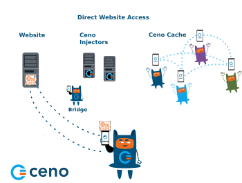
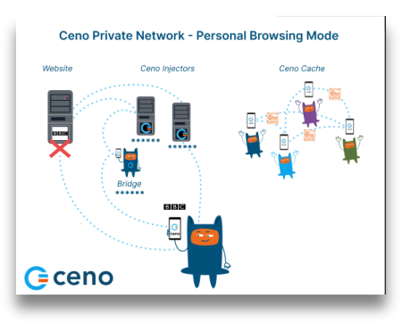

Публічний чи персональний?
Після екранів реєстрації та дозволів додаток відображає головний екран. Як тільки екран з'явиться, ви помітите дві помітні кнопки під назвою «Публічний» та «Особистий». Вони дозволяють вибрати між публічним та особистим режимом перегляду.

Публічний Перегляд

На зображенні нижче показано, як Ceno отримує вміст веб-сайту в режимі публічного перегляду.
Пунктирні лінії на цьому зображенні позначають запити та відповіді на вміст веб-сайту, а зірочки – зашифрований вміст.
У режимі публічного перегляду запити користувачів обробляються публічною
мережею Ceno. У цьому режимі користувачі запитують вміст веб-сайтів так само,
як і при використанні будь-якого іншого браузера. Якщо Ceno може отримати прямий
доступ до вихідного веб-сайту, він завантажить його вміст і доставить його
користувачеві — так само, як і більшість інших браузерів.
Однак, якщо Ceno не може підключитися до потрібного веб-сайту, він спробує
підключитися до нього через інжектори.
Форсунки
Інжектори — це захищені сервери, які відповідають за введення часто використовуваного контенту в мережу Ceno, а також за перевірку його автентичності та підписання. Інжектори розміщуються в стратегічних місцях, щоб вони залишалися доступними для користувачів в обмежених зонах і могли також досягати вихідних веб-сайтів. Вони допомагають отримувати бажаний контент або з вихідного веб-сайту, або з мережі Ceno і повертати його користувачеві, який його запросив. Вони управляються eQualitie.
Як користувач, вам не потрібно нічого робити, щоб підключитися до Інжектора — додаток робить це автоматично, коли ви запитуєте веб-сайт, до якого він не має безпосереднього доступу.
Мости
Мости — це пристрої, що належать окремим користувачам Ceno, які знаходяться в місцях з відносно необмеженим підключенням та доступом до Інтернету. До них можуть підключитися користувачі Ceno, які не можуть безпосередньо зайти на веб-сайти. Ці пристрої відповідають за пересилання зашифрованих запитів користувачів до інжекторів та зашифрованих відповідей назад до користувачів.
Мости не можуть читати запити та відповіді, які вони пересилають.
Кожен користувач Ceno може налаштувати свій пристрій як міст.
Перемикач Увімкнути режим мосту можна активувати або за посиланням на головній сторінці, або з вертикального меню з трьома крапками праворуч від адресного рядка.

На сторінці налаштувань переміщення перемикача Увімкнути режим мосту у положення УВІМК


зробить ваш пристрій мостом для інших користувачів Ceno, чий доступ до Інтернету обмеженіший. Це вимагає перезапуску служб Ceno

Після успішного встановлення режиму мосту ви отримаєте підтвердження.

З цього моменту додаток Ceno на вашому пристрої може виступати як місток, який допомагає користувачам Ceno в обмежених зонах отримувати доступ до бажаного контенту.
Однак, для мостового підключення також потрібні певні налаштування вашого маршрутизатора або мережі, які описані в розділі Конфігурація моста.
Кеш Ceno
І останнє, але не менш важливе, кеш Ceno. Всі користувачі Ceno є членами цієї однорангової мережі, вони зберігають вміст веб-сайтів, отриманий через публічну мережу Ceno, і обмінюються ним між собою.
У режимі публічного перегляду Ceno отримує запитуваний контент, використовуючи будь-який із цих каналів зв'язку. Він видаляє всі приватні дані (такі як паролі та файли cookie) з веб-трафіку, щоб уникнути їх витоку іншим користувачам.
Публічний перегляд – коли його використовувати
Ця опція призначена для вас, користувача, щоб отримати доступ до більшості речей, які не вимагають входу в систему або введення будь-яких особистих даних. Ви можете використовувати її для перегляду, прослуховування подкастів, перегляду новин, читання блогів або статей, стеження за спортом, наукою, музикою, подіями або іншим контентом. У режимі публічного перегляду Ceno може спробувати отримати доступ до запитуваного контенту безпосередньо з веб-сайтів, з публічної мережі Ceno (інжектори та мости) або від інших користувачів Ceno (розподілений кеш).
Зверніть увагу, що деякий контент, який не вважається безпечним для спільного використання, ніколи не буде вставлений, незалежно від того, скільки людей отримують його за допомогою публічного перегляду. Сюди входить контент, позначений як приватний сервером-джерелом, контент, що вимагає автентифікації, та деякий трафік, що обмінюється певними динамічними веб-додатками.
Джерела веб-сайтів у режимі публічного перегляду
Коли ви хочете отримати доступ до веб-сайту, використовуючи режим публічного перегляду Ceno, програма може спробувати отримати вміст безпосередньо з веб-сайту або через публічну мережу Ceno. У наступному розділі ми опишемо цей процес більш детально.
Контент отримано безпосередньо з веб-сайту
Ceno отримуватиме потрібний контент безпосередньо з вихідного сервера, коли цей сервер буде доступний. Це той самий спосіб доступу до будь-якого веб-сайту через більшість інших популярних браузерів.
Коли ви відвідуєте веб-сайти таким чином, вони не зберігаються у вашому кеші, і ви не можете ділитися ними з іншими членами мережі Ceno. Коли Ceno отримує вміст з вихідного сервера, маленька кнопка Ceno в адресному рядку буде позначена зеленою крапкою.

Якщо ви натиснете цю кнопку, ви побачите, скільки компонентів запитуваного веб-сайту було отримано з веб-сайту, мережі Ceno або кешу Ceno.

Якщо ви перейдете до Налаштування > Дані, ви можете перевірити, чи не зберігаються дані у вашому кеші після того, як ви отримали доступ до веб-сайту безпосередньо з його сервера.

У цьому випадку ризики для вас як користувача аналогічні ризикам, пов’язаним із використанням будь-якого іншого браузера. Дізнайтеся більше.
Контент отримано через публічну мережу Ceno
Коли Ceno не може зв'язатися з вихідним сервером, він намагається отримати до нього доступ через загальнодоступну мережу Ceno.

Ця мережа містить захищені сервери, які називаються інжекторами, які мають прямий доступ до вихідних веб-сайтів і вводять вміст цих веб-сайтів у мережу Ceno. Коли вміст веб-сайту отримується через публічну мережу Ceno, це буде позначено помаранчевою крапкою на маленькій кнопці Ceno у вашій адресній стрічці.

Натискання на цю кнопку відкриє невелике вікно, яке повідомить вам, скільки компонентів веб-сайту було отримано з публічної мережі Ceno.

Будь-який веб-сайт, до якого ви отримаєте доступ таким чином, буде збережено в локальному кеші вашого браузера Ceno та буде доступний іншим учасникам мережі Ceno.
Ви можете переглянути, які веб-сайти зберігаються у вашому кеші, перейшовши до розділу Налаштування > Дані.
У цьому розділі є три пункти: Локальний кеш, Видалене вами вміст та
Очистити кешований вміст.
У розділі Локальний кеш показано, скільки даних було збережено в кеші Ceno
на вашому пристрої.

Якщо ви натиснете Контент, яким ви поділилися, ви зможете побачити вебсайти, які ваш пристрій може зробити доступними для мережі Ceno.

Натискання опції Очистити кешований вміст дозволить вам видалити всі кешовані дані.

Кешований вміст
Цей спосіб доступу до веб-сайтів корисний, коли інші компоненти публічної мережі
Ceno недоступні або коли ви вирішили отримати доступ до веб-сайту з пристроїв
своїх колег з інших причин.
На малюнку нижче показано запити та відповіді, обмінені між членами мережі Ceno,
які раніше отримували доступ до потрібних веб-сайтів і зберегли їх у кеші.

Якщо вміст веб-сайту отримується через кеш Ceno, кнопка Ceno матиме маленьку синю крапку, яка це вказує.

Натискання кнопки Ceno відкриє інформаційний екран із відповідним повідомленням.

У цьому випадку вміст веб-сайту буде кешовано на вашому пристрої та надано іншим користувачам Ceno за запитом. Ви можете перевірити це, перейшовши в Налаштування
Дані > Вміст, до якого ви поділилися.
Також може статися так, що браузер Ceno відкриє веб-сайт, який був збережений у вашому кеші під час попереднього відвідування. У цьому випадку Ceno повідомить вас про це, відобразивши джерела веб-сайту сірим кольором.

У налаштуваннях Ceno > Інструменти розробника > Джерела веб-сайтів ви можете встановити або зняти прапорці з цих чотирьох параметрів.

Якщо всі вони відмічені, залежно від режиму перегляду, Ceno намагається завантажити веб-сайт за допомогою всіх відповідних механізмів одночасно. Ми називаємо це «змішаним завантаженням». Використовується той механізм, який відповість першим, а решта запитів скасовуються.
Для найкращих результатів радимо завжди залишати позначеними всі 4 ці пункти.
Персональний перегляд – коли його використовувати
Ви можете вибрати особистий перегляд, натиснувши кнопку «Особистий» на головному екрані.

Якщо ви оберете цю опцію, навіть якщо всі чотири налаштування Джерела веб-сайтів позначено, ваш додаток Ceno намагатиметься отримати доступ до потрібних веб-сайтів лише безпосередньо або через приватну мережу Ceno.
Цей режим перегляду можна використовувати для веб-сайтів, на яких потрібно входити в систему та вводити інші особисті дані. Приклади: веб-сайти для покупок, електронна пошта, соціальні мережі або інші веб-сайти, якими ви не бажаєте ділитися з рештою мережі Ceno.
Доступ до веб-сайтів через приватну мережу ceno
На наступному зображенні показано потік запитів та відповідей веб-сайту між елементами приватної мережі Ceno.
У режимі особистого перегляду, коли запитується веб-сайт, Ceno отримує його безпосередньо з вихідних серверів або через Ceno Injectors. Однак у особистому режимі Injectors не кешують вміст, як це роблять у режимі публічного перегляду. Вони просто пересилають запит на вихідний сервер і пересилають відповідь користувачеві, але не можуть бачити зашифрований вміст. Дізнайтеся більше про режим особистого перегляду.
Іноді, якщо вебсайт недоступний у режимі публічного перегляду через різницю в роботі цих двох режимів, ми рекомендуємо спробувати отримати до нього доступ через режим особистого перегляду.
Щоб цей механізм працював, необхідно, щоб джерела веб-сайту Приватно та Веб-сайт залишалися перевіреними.